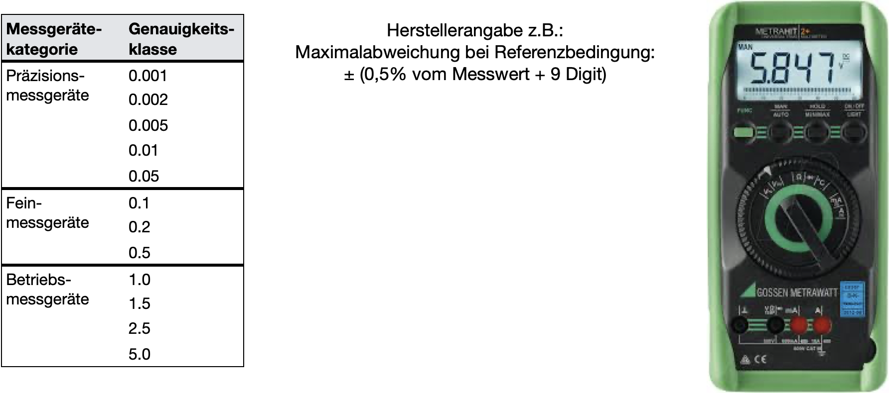

Analyse und Präsentation von Messwerten
Contents
Analyse und Präsentation von Messwerten#
Viele Studierende sammeln im Praktikum erstmals Erfahrung im Umgang mit Messdaten, nehmen eigene Messreihen auf und müssen diese begründbar und nachvollziehbar auswerten und darstellen. Im Studium, z.B. im Rahmen von Semester-, Abschluss- oder sogar Promotionsarbeiten müssen Analyse und Präsentation wissenschaftlich und sachgerecht sein. Auf dieser Seite findet ihr das absolute Minimum an notwendigen Hilfsmitteln, Grundideen und Praktiken, die ihr bei der Auswertung von Messdaten immer berücksichtigen solltet!
Zusammenfassung#
Begriff |
Beschreibung |
|---|---|
Messgröße |
die spezielle Größe der Messung, \(x\) |
Wahrer Wert |
tatsächlich vorhandener Wert einer Messgröße, dessen Wert niemals bekannt sein wird. |
Messergebnis |
(Schätz-)Wert, den die Messgröße durch Auswertung einer Messung bekommt |
arithmetischer Mittelwert \(\overline x\) |
Schätzewert für den wahren Wert einer Messgröße aus einer Messreihe mit den Messwerten \(x_j\) und der Anzahl der Messwerte \(m\): \(\overline x = \frac{1}{m}\sum_{j=1}^m x_j\) |
Messunsicherheit \(u(x)\) |
Wichtiger Bestandteil zur Angabe eines Messergebnisses. Die Unsicherheit charakterisiert einen Vertrauensbereich, der der Messgröße zugeschrieben wird: \(\overline x \pm u(x)\) |
relative Messunsicherheit |
Messunsicherheit dividiert durch den Betrag des Mittelwerts: $A_{r} = \frac{u(x)}{ |
Varianz: mittlere quadratische Abweichung \(s^2(x)\) |
Ein Maß für die Messunsicherheit. Abweichung der Messwerte zum Mittelwert werden quadriert und gemittelt: \(s^2 = \frac{1}{m-1} \sum_{j=1}^m (x_j - \overline x)^2\) |
Standardabweichung |
Wurzel aus der mittleren quadratischen Abweichung: \(s = \sqrt{\frac{1}{m-1} \sum_{j=1}^m (x_j - \overline x)^2}\) |
empirische Varianz \(\sigma(x)^2\) |
Schätzung der Varianz bezogen auf den wahren Wert (nicht auf den Mittelwert der Messreihe) der Messgröße: \(\sigma^2 = \lim_{m\rightarrow \infty}\frac{1}{m} \sum_{j=1}^m (x_j - \mu)^2\) |
empirische Standardabweichung \(\sigma(x)\) |
Wurzel aus der empirischen Varianz: \(\sigma = \lim_{m\rightarrow \infty}\sqrt{\frac{1}{m} \sum_{j=1}^m (x_j - \mu)^2}\) |
Wahrscheinlichkeitsverteilung \(dP(x)\) |
eine Fukntion, die die Wahrscheinlichkeit angibt, dass eine Messgröße \(x\) durch Messung einen bestimmten Wert \(x_j + dx\) annehmen wird. |
Messdaten sammeln#
Aufgabe der Messtechnik ist es physikalische Messgrößen quantitativ zu beobachten und ist somit wichtiger Bestandteil in der Physik. Eine quantitative Beschreibung bedeutet immer, dass eine Messgröße mit einem Zahlenwert, \(x\), und einer Maßeinheit, \(E\), ausgedrückt wird. Um einen möglichst guten Zahlenwert experimentell zu ermitteln, wird neben der konkreten Durchführung ein Großteil der Experimentierzeit damit verbracht das Experiment vorzubereiten und zu planen, aber auch die Daten auszuwerten und darzustellen, Ergebnisse zu überprüfen und ggf. Messungen zu wiederholen. Was sich beim Messen nicht umgehen lässt, und was der ein oder andere sicherlich schon im Praktikum beobachten konnte, ist, dass Beobachtungen immer statistischen (zufälligen) Schwankungen unterliegen. Dies führt dazu, dass sich das Messergebnis immer verändert. eine Messung wird prinzipiell niemals den wahren Wert liefern können, weshalb wir sorgfältig messen und auswerten müssen. Es gibt best practice Methoden und Techniken, die in der Wissenschaft benutzt werden, um Unsicherheiten und Schwankungen der Messgröße quantitativ zu beschreiben um so ein Qualitätsmaß der Messung bzw. unseres Experimentes zu erhalten. Durch die Einhaltung der best practice Methoden kannst du jederzeit Rechenschaft ablegen und das Ergebnis begründen. Die grundlegende Norm für die Messtechnik ist in der DIN-Norm DIN 1319 und dem GUM (Guide to the Expression of Uncertainty in Measurement) offiziell festgehalten.
Planung: Was soll gemessen werden? Was wird hierfür benötigt? Welche Fehlerquellen/Störeinflüsse könnten auftreten, bzw. welche sind bekannt? Welche systematischen Unsicherheiten sind bekannt?
Durchführung: Führe Protokoll! Wurde alles, was wichtig sein könnte, protokolliert und in Tabellen zusammengefasst, aufgeschrieben, fotografiert?
Auswertung: Prüfe die Ergebnisse auf Vollständigkeit und Übersichtlichkeit! Hierzu gehört auch eine vollständige Abschätzung von Messunsicherheiten.
Prüfung: Ergeben die Ergebnisse Sinn und sind diese konsistent mit anderen Ergebnissen aus der Literatur? Haben wir die Ergebnisse erwartet?
Darstellung: Vollständige Angabe des Messergebnisses, bestehend aus Zahlenwert, Maßeinheit und Messunsicherheit. Verwende die wissenschaftliche Notation für Zehnerpotenzen:

Diagramme zeichnen#
Mittels Diagrammen (engl. Plots) werden Messwerte dargestellt. Die folgenden Regeln helfen dabei, dass die Diagramme anschaulich sind und der Betrachter direkt erkennt, worum es geht:
Achsenbeschriftung: Beschrifte die Achsen richtig, eindeutig und mit vollständiger Angabe: physikalische Größe und Maßeinheit!
Skalierung: Wähle eine passende Skalierung in 1er-/2er-/5er oder 10er- (Dakaden) Schritten
Markierungen: Wähle eine gute erkennbare Markierung für Messpunkte und ggf. eine angebrachte Linienbreite für Kurven. Hierbei können unterschiedliche Farben, Strichdicken, Stricharten und Markierungspunkte verwendet werden, oder eine Kombination.
Titel: Nutze passende Über-/ oder Unterschriften für das Diagramm, insbesondere wenn diese in der Auswertung im Text erwähnt werden.
Anderes: Weitere Punkte und Linien, die nicht gemessen wurden, sondern nur als Hilfe dienen (z.B. Fit-Funktionen, Modelle, Referenzlinien) oder Kommentare sind, sollten besonders gekennzeichnet werden.
Messunsicherheiten: Für Messwerte (in Form von Fehlerbalken), aber auch für Funktionsterme und Ausgleichsgeraden, müssen Messunsicherheiten in den Graphen angegeben werden.
Verwende eine sinnvolle Software für die Datenanalyse und die grafische Darstellung, welche auch Fit-Analysen unterstützen. Wir werden hier im folgenden Beispiele in python aufführen und Jupyter Notebooks verwenden. Die Codes auf dieser Seite können direkt benutzt und sogar ausgeführt werden.
Weitere Software ist Qti-Plot (kostenlos) oder Matlab (Lizenzen über HSU verfügbar).
Im Folgenden sind zwei Diagramma dargestellt, wovon das zweite einige Defizite aufweist. Aufgrund der Darstellung wurde eine lineare Regression über einen anderen Messwertebereich durchgeführt, wodurch der Temperaturanstieg der letzten Jahre um einen Faktor 2 zu gering abgeschätzt wurde!
#Benötigte Libraries:
import numpy as np
import pandas as pd
import matplotlib.pyplot as plt
import plotly.offline as py
py.init_notebook_mode(connected=True)
import plotly.graph_objs as go
import plotly.tools as tls
import seaborn as sns
import time
import warnings
warnings.filterwarnings('ignore')
# MatplotLib Settings:
plt.style.use('default') # Matplotlib Style wählen
plt.figure(figsize=(10,5)) # Plot-Größe
plt.rcParams['font.size'] = 10; # Schriftgröße
print('Setup Complete')
Setup Complete
<Figure size 1000x500 with 0 Axes>
link = 'data/graph.csv' # Beispieldatei mit Klimadaten
global_mean = pd.read_csv(link, header = 1) # Daten einlesen
global_mean["uncertainty"] = 0.25 #Messunsicherheiten abschätzen, hier 0.25K Temperaturgenauigkeit angenommen
# Lineare Regression berechnen:
x=global_mean.loc[global_mean["Year"] >= 1980,"Year"]
y=global_mean.loc[global_mean["Year"] >= 1980,"No_Smoothing"]
y_err = global_mean.loc[global_mean["Year"] >= 1980,"uncertainty"]
model = np.polyfit(x, y, deg=1, w=1/y_err, cov=True) # 1. Wert = Anstieg , 2. Wert = Schnittpunkt mit y-Achse
y_model = model[0][0]*x+model[0][1] # Modell einer linearen Regression
# print(global_mean) # Eingelesene Daten ausgeben
plt.errorbar(global_mean["Year"],global_mean["No_Smoothing"], yerr=global_mean["uncertainty"], ls="-", lw=1, marker="s", ms=3, color="tab:gray", alpha=0.5, label="Werte");
plt.plot(global_mean["Year"],global_mean["Lowess(5)"], lw=3, color="tab:blue", label="Glättung (NASA)");
plt.plot(x,y_model, ls="-", lw=3, color="tab:red", label=f"lineare Regression y=({model[0][0]*1000:.3f}+-{np.sqrt(model[1][0][0]*1000):.3f})1e-3*x+({model[0][1]:.3f}+-{np.sqrt(model[1][1][1]):.3f})");
plt.xlabel('Jahr')
plt.ylabel("Jahresmitteltemperaturabweichung [°C]")
plt.legend();
plt.grid();
# Temperaturanstieg ausgeben:
print(f"Temperaturanstieg pro Jahr (von 1980 bis 2020): {model[0][0]:.3f}°C/Jahr")
Temperaturanstieg pro Jahr (von 1980 bis 2020): 0.019°C/Jahr
# Lineare Regression berechnen:
x=global_mean["Year"]
y=global_mean["No_Smoothing"]
y_err = global_mean["uncertainty"]
model = np.polyfit(x, y, deg=1, w=1/y_err, cov=True) # 1. Wert = Anstieg , 2. Wert = Schnittpunkt mit y-Achse
y_model = model[0][0]*x+model[0][1] # Modell einer linearen Regression
plt.plot(global_mean["Year"],global_mean["No_Smoothing"], ls="-", lw=1, marker="s", ms=1, color="tab:gray", alpha=0.5, label="Werte");
plt.plot(global_mean["Year"],global_mean["Lowess(5)"], lw=1, color="tab:blue", label="Kurve");
plt.plot(x,y_model, ls="-", lw=3, color="tab:red", label=f"Modell");
plt.ylabel("y")
plt.xlim([1850,2040])
plt.ylim([-5,5])
plt.legend();
plt.grid();
# Temperaturanstieg ausgeben:
print(f"Temperaturanstieg pro Jahr (von 1980 bis 2020): {model[0][0]:.3f}°C/Jahr")
Temperaturanstieg pro Jahr (von 1980 bis 2020): 0.008°C/Jahr
Quellen und Ursachen von Messunsicherheiten#
Früher hat man statt Abweichung noch den Begriff Messfehler verwendet. Man dachte, dass man mit genügend Aufwand, Sorgfalt und bestmöglicher Technologie den Fehler vollständig eliminieren können. Spätestens seit der Theorie der Quantenphysik ist uns allerdings bekannt, dass zufällige Einflüsse auf die beobachteten Messgrößen unvermeidlich sind und auch nicht vorhergesagt werden können. Statt eines einzig wahren Wertes werden in der Quantenphysik Messgrößen durch deren Erwartungswerte vorhergesagt. Diesen Messgrößen liegt eine Wahrscheinlichkeitsdichte zu Grunde, dessen Varianz (bzw. Standardabweichung) nicht verschwindet! Somit werden für ein und dieselbe physikalische Messgröße verschiedene Ergebnisse gemessen, obwohl nahezu identische Bedingungen herrschen. Das Eintreten eines bestimmten Messergebnisses ist an eine bestimmte Wahrscheinlichkeit gekoppelt, mit der dieses Ergebnis eintritt.
Jede Messung einer physikalischen Größe \(x\) ist abhängig von den verwendeten Messgeräten, dem Messverfahren, dem Messobjekt, von Umwelteinflüssen (Temperatur, Feuchtigkeit, elektromagnetische Felder) und schließlich auch vom Beobachter (Müdigkeit, Sehschärfe, Übung). Messungen liefern daher lediglich Schätzwerte für die wahren Werte einer Größe. Es gibt prinzipiell keine Möglichkeit, den wahren Wert einer Messgröße zu messen. Im Rahmen internationaler Anstrengungen für eine einheitliche Bewertung von Einflussgrößen auf eine Messung werden zwei Kategorien von Methoden der Berechnung von Unsicherheiten unterschieden [GUM]:
Typ A (“Zufällige Abweichung”): Berechnung der Messunsicherheit durch statistische Analyse der Messungen
Typ B (“Systematische Abweichung”): Berechnung der Messunsicherheit mit anderen Mitteln als der statistischen Analyse
{kind=link}
Typ A-Unsicherheiten (“Zufällige Fehler”)#
Dies sind Messunsicherheiten, die nicht einseitig gerichtet sind, sondern einer zufälligen Streuung der Messwerte zugrunde liegen. Zur Behandlung dieser Messunsicherheiten nutzt man die Stochastik (Wahrscheinlichkeitslehre und Statistik). Zufällige Fehler kennt man nicht, er ist folglich nicht korrigierbar und lässt sich auch nicht reproduzieren unter gleichen Messbedingungen. Hier sind wiederholte Messungen und statistische Analysen notwendig, wodurch Mittelwert und Standardabweichung von sogenannten Stichproben ermittelt wird. Wie gewinnt man aus einer Messreihe \(x_j\) den besten Schätzewert, der mit maximaler Wahrscheinlichkeit am nähesten am wahren Wert, \(x_w\), liegt? Mit welcher Wahrscheinlichkeit liegt das Messergebnis innerhalb eines bestimmten Intervalls um den wahren Wert, $\(x = x_w + \Delta x ?\)$
Typ B-Unsicherheiten (“Systematische Fehler”)#
Hierbei handelt es sich um reproduzierbare Messunsicherheiten. Sie kann durch Aufwand und Kalibration verbessert werden, was nicht für zufällige Messabweichungen gilt. Systematische Messabweichungen (z.B. Kennlinienfehler) sollten in aller Regel am besten korrigiert werden, wenn dies möglich ist. Ansonsten sollte mindestens eine Angabe der Messabweichung erfolgen. Es gibt keine allgemeingültige Definition oder allgemeine Verfahren zur Korrektur. Das heißt für jeden Fall müssen neue Verfahren entwickelt werden. Hier kommen ein paar Beispiele, wie man mit solchen systematischen Messunsicherheiten umgehen kann:
Anzeigefehler von Messgeräten#
Messgeräte werden anhand ihrer Genauigkeit in Klassen eingruppiert. Die Klasse entspricht der relativen Messabweichung. Präzisionsmessgeräte besitzen somit Abweichungen die zwischen 0,001% und 0,05% liegen. Die Genauigkeitsklasse K 2,5 (Angabe auf der Mess- skala nach DIN EN 60051 Abb. 1) bedeutet: Ist der Endwert des eingestellten Messbereichs \(U_\mathrm{end}\), dann beträgt die Typ B-Unsicherheit über den gesamten Messbereich \(u(U) = 0,0025\cdot U_\mathrm{end}\). Für \(U_\mathrm{end} = 15\,\mathrm V\) erhält man also:
U_end = 15
u = 0.0025
print('eine absolute Unsicherheit von ', u*U_end, 'V')
eine absolute Unsicherheit von 0.0375 V
Dieser Wert von 0,375V gilt unabhängig davon, wie groß der Zeigerausschlag beim Messgerät ist. Um die relative Unsicherheit gering zu halten, sollte der Messbereich möglichst so gewählt werden, dass der Messwert am Skalenende abgelesen wird.
Digitalstellenfehler#
{kind=link}
Das Gerät im Bild zeigt den Messwert 5.847V an. Laut Hersteller ist die Maximalabweichung (unter Referenzbedingungen) \(a = \pm\) (0,5% vom Messwert + 9 Digit). Die Anzahl der Nachkommastellen (also der Digits) ist in diesem Falle 3, also 0,001V. Genauer kann das Messgerät keine Spannung angeben. Die Messabweichung setzt sich also wiefolgt zusammen (zwei signifikante Stellen reichen hierbei, da der Messwert selber nicht genauer angezeigt wird):
Innerhalb dieses \(\pm\) Bereiches der Breite \(2a\) unterstellt man eine Gleichverteilung der Messwerte und bekommt damit die Standardunsicherheit:
Ist nichts weiter bekannt, schätzt man die Unsicherheit über einen Mindestfehler von a = 1 Digit ab.
Messwert = 5.847 # in V
Nachkommastellen = 5
A_rel = 0.005 # = 0.5%
Digit = 0.001 # in V
A_total = A_rel * Messwert + 9 * Digit
print('Die Messtoleranz beträgt: +-',round(A_total,Nachkommastellen), 'V = +-', round(A_total*1000,Nachkommastellen), 'mV')
print('Die Unsicherheit beträgt: +-',round(A_total/np.sqrt(3),Nachkommastellen), 'V = +-', round(A_total*1000/np.sqrt(3),Nachkommastellen), 'mV')
Die Messtoleranz beträgt: +- 0.03824 V = +- 38.235 mV
Die Unsicherheit beträgt: +- 0.02207 V = +- 22.07499 mV
Man merkst, dass systematische Fehler sehr unangenehm sein können, da Gegenmaßnahmen fallabhängig entwickelt werden müssen. In einigen Fällen gelangt man zu einer brauchbaren Abschätzung der Unsicherheit, wenn man den „worst case“ annimmt.
Weitere Unsicherheiten#
Dann gibt es noch der Vollständigkeitshaler die dynamischen Fehler. Jedes Messsystem braucht eine bestimmte Zeit, um sich auf einen bestimmten Messwert einzupedeln. Dies nennt man auch die Latenzzeit, oder die Trägheit, eines Messsystems. Es besteht also die Möglichkeit, dass man zu früh misst, und das Messsystem den zu messenden Wert noch gar nicht richtig anzeigen kann.
Quantisierungsfehler entstehen beim Prozess des Digitalisierens der Messwerte. Da nur eine endliche Anzahl von Möglichkeiten besteht einen analogen Messwert darzustellen (abhängig von der Anzahl der verwendet Bits) gehen bei diesem Prozess immer Informationen verloren.
Schreibweise eines Messwertes mit Messabweichung#
Die Gesamt-Messabweichung einer Messgröße \(x\) setzt sich also wiefolgt zusammen:
wobei \(A_r\) zufällige und \(A_s\) systematische Messabweichungen sind. Ein Messwert setzt sich also zusammen aus dem wahren oder richtigen Wert, den wir niemals kennen werden, und der Messabweichung. Es gelten folgende Zusammenhänge:
Der ermittelte Messwert lässt sich wiefolgt schreiben, wobei \(x_w\) der wahre, aber uns unbekannte, Wert ist. \(A\) ist die Messabweichung:
Die absolute Messabweichung ergibt sich aus Umstellen der Gleichung:
Bei der Angabe relativen Messabweichung wird die Messabweichung auf einen Referenzwert, \(r\), bezogen, der entweder der Messwert selber ist (\(r = x\)), oder manchmal auch die Spanne (\(r = x_\mathrm{max} - x_\mathrm{min}\)) oder Maximalwert/Messbereichsendwert (\(r = x_\mathrm{max}\)):
Signifikanten Stellen#
Die Anzahl der Nachkommastellen eines Messwertes ist niemals größer als die der angegebenen Messabweichung oder Unsicherheit. Die Anzahl der Nachkommastellen der Messabweichung wird über signifikante Stellen (= angegebene Ziffern ohne führende Nullen) definiert. Je mehr signifikante Stellen angegeben werden, desto größer ist die Genuigkeit, die reklamiert wird. Es gelten folgende Rechenoperationen nach DIN1333:
Bei Addition von Größen bekommt das Ergebnis genauso viele Nachkommastellen wie die Zahl mit den wenigsten Nachkommastellen.
Bei Multiplikation von Größen bekommst das Ergebnis genauso viele signifikante Stellen wie der Zahl mit den wenigsten signifikanten Stellen.
Messunsicherheiten werden auf eine signifikante Stelle gerundet. Eine Ausnahme existiert, wenn die erste Ziffer eine “1” ist, weil sonst Rundungsfehler schnell zu groß werden. Beispiel: \(u(g) = 0,1562\,\mathrm{m/s^2} = 0,16\,\mathrm{m/s^2}\). Die Darstellung \(g = (9,81 \pm 0,03562)\,\mathrm{m/s^2}\) wäre unsinnig, da die Genauigkeit auf zwei Nachkommastellen durch den Messwert beschränkt ist.
Messwerte werden so angegeben, dass die letzte signifikante Stelle die gleiche Größenprdnung hat, wie die Messunsicherheit: Die Angabe \(H=(13,13\pm 1)\,\mathrm m\) ist sinnlos, richtig wäre \(H=(13\pm 1)\,\mathrm m\).
Um Rundungsfehler zu reduzieren, führen Sie in den Berechnungen soviel signifikante Stellen der Messunsicherheit mit, wie nötig.
Grafische Darstellung eines Messwertes mit Messabweichung#
Die grafische Darstellung eines solchen Messwertes in einem Diagramm kann im folgenden Code-Block ausgeführt und angesehen werden. Prinzipiell gilt, dass für jeden Messwert in der Regel ein solcher Fehlerbalken stets anzugeben ist.
x = [1.0] # Datenwerte für x-Achse, hier Nr der Messung
y = [1.0] # Messwert (Datenpunkt)
delta_y = [0.3] # Messabweichung
# Diagrammdarstellung:
plt.errorbar(x, y, yerr=delta_y, fmt='bo', color="tab:blue")
plt.xlim(0.5, 1.5)
#plt.ylim(0.,1.1*(max(y)+max(delta_y)))
plt.ylabel("U (V)")
plt.xlabel("Nr. der Messung")
plt.show()
Diskrepanz und Konsistenz#
Die Diskrepanz zweier Messwerte derselben Größe ist der Absolutbetrag ihrer Differenz. Zwei Messungen sind konsistent, wenn ihre Diskrepanz geringer ist, als die (kleinere der) Messunsicherheiten:
\(g = (9,73 \pm 0,05)\,\mathrm{m/s^2}\) und \(g = (9,76 \pm 0,04)\,\mathrm{m/s^2}\) sind konsistent, nicht jedoch \(g = (9,71 \pm 0,02)\,\mathrm{m/s^2}\) und \(g = (9,76 \pm 0,04)\,\mathrm{m/s^2}\)
Ist \(g = (8.9 \pm 1,5)\,\mathrm{m/s^2}\) das Ergebnis einer Messung des Ortsfaktors, dann ist die Messung zwar nicht sonderlich präzise, aber mit dem Literaturwert von \(g = 9,81\,\mathrm{m/s^2}\) vereinbar.
y=[9.73, 9.76, 9.71, 9.76, 8.9] # Messung
u_y=[0.05,0.04,0.02,0.04,1.5] # Unsicherheit d
y_w=9.81 # wahrer / richtiger Wert
plt.errorbar([1, 2, 3,4,5], y, yerr=u_y, fmt='bo', color = "tab:blue")
plt.axhline(y_w, color='tab:red', linewidth=3)
plt.text(1.2, 9.83, 'wahrer Wert', color='tab:red')
plt.ylabel(r"Erdbeschleunigung")
plt.xlabel("Nr. der Messung")
plt.title("Messungen der Erdbeschleunigung")
plt.ylim([8.8,9.9])
plt.grid()
plt.show()
Nur einer der Messwerte überlappt mit dem wahren Wert der Erdbeschleunigung Die Fehlerbalken der zweiten Messung hingegen sind davon entfernt, in den wahren Bereich überzulappen. D.h. es existiert hier ein Widerspruch zu vorherigen Messungen, die den wahren Wert kennzeichnete. Würde es sich hierbei nicht um die Messung der Erdbeschleunigung, sondern um die einer Naturkonstante handeln, gäbe es sogar einen Widerspruch zum SI-Einheitensystem.
Mittelwert und Standardabweichung#
Statistische Messunsicherheit#
Statistische, oder zufällige, Einflüsse auf einen Messwert lassen sich durch Wiederholungen der eigentlichen Messung bestimmen. Dies nennt man auch Messreihe und bedeutet, dass \(m\) Messungen für ein und denselben Messwert durchgeführt werden. Die einzelnen Messwerte \(x_j\) unterscheiden sich, da der wahre Wert, \(x_w\), immer mit einer zufälligen Abweichung, \(A_j\), versehen wird:
Bei genügend vielen Wiederholungen der Messung kann in vielen Fällen beobachtet werden, dass sich die Messwerte \(x_j\) um einen zentralen Werte, \(\overline x\) scharen. Die Häufigkeit, einen Messwert in einem bestimmten Abstand zu diesem zentralen Werte zu finden, \(|x_j - \overline x\), ist umso kleiner, je größer der Abstand ist. Man spricht hierbei von einer Häufigkeitsverteilung der \(x_j\). Die grafische Darstellung einer solchen Messreihe erfolgt in einem Histogramm. Diese Darstellung wird insbesondere dann häufig benutzt, wenn Messreihen mit vielen Messwerten vorliegen. An einer solchen Darstellung erkennt häufig schon die Art der zugrundeliegenden Verteilung der Messwerten. In nachfolgendem Code-Block wird für die Messreihe die absolute Häufigkeit der einzelnen Werte in einer bestimmten Klasse grafisch dargestellt.
x_volt = np.array([1.02, 1.04, 0.98, 1.00, 0.95, 0.99,0.97,0.99,1.00,0.98,0.99,1.01,0.97,1.00,1.02], dtype=float)
bconts, bedges, _p = plt.hist(x_volt, bins=np.linspace(0.95, 1.05, 6))
plt.ylabel('Absolute Häufigkeit H(U)')
plt.xlabel('Klassenverteilung der Spannung (V)')
plt.show()

Die relative Häufigkeit berechnet sich aus der absoluten Häufigkeit dividiert durch die Gesamtanzahl der vorgenommenen Messungen. Aus der Häufigkeit lässt sich auch die sogenannte Häufigkeitsdichte berechnen. Die Häufigkeitsdichte gibt bei einem Histogramm die Höhe des Rechtecks an. Mit ihr kann man den Vergleich verschiedener Klassen erst vornehmen. Anders ausgedrückt heißt dass, dass die Häufigkeitsdichte einer Klasse das Verhältnis der absoluten oder der relativen Häufigkeit einer Klasse zur entsprechenden Klassenbreite ist. Genauso lässt sich die Häufigkeitsdichte auch berechnen:
Das Integral über die relative Häufigkeitsdichte ist immer auf 1 normiert, bzw auf 100% im Falle der absoluten Häufigkeitsdichte.
Im nachstehenden Code-Block wird die relative Häufigkeitsdichte für die obenstehende Messreihe geplottet und das Integral berechnet.
x_volt = np.array([1.02, 1.04, 0.98, 1.00, 0.95, 0.99,0.97,0.99,1.00,0.98,0.99,1.01,0.97,1.00,1.02], dtype=float)
m = len(x_volt)
bconts, bedges, _p = plt.hist(x_volt, density=True, bins=np.linspace(0.95, 1.05, 6))
plt.ylabel('Häufigkeitsdichte h(x)')
plt.xlabel('Klassenverteilung der Spannung (V)')
plt.show()
print('Integral über die Häufigkeitsdichte: ',(bconts * np.diff(bedges)).sum())

Integral über die Häufigkeitsdichte: 1.0
Mit größerer mathematischer Schärfe formuliert man: Die Wahrscheinlichkeit, einen Messwert innerhalb eines kleinen Intervalls \(\Delta x\) um den Wert \(\overline x\) zu finden, ist \(dP(X) = p(x)\cdot \Delta x\). Je größer die Stichprobe \(m\) (Anzahl der Messungen), desto eher erkennt man die zugrundeliegende Verteilung, die der Messreihe unterliegt. Häufig handelt es sich in der Praxis um eine Normalverteilung (oder auch Gaußverteilung genannt):
Dies ist verblüffender Weise auch immer noch dann der Fall, wenn sehr viele externe Störungen (evtl. mit unterschiedlichen Verteilungsfunktionen) zu einer gemeinsamen Störgröße kombiniert werden. Die zusammengefasste Störung ist trotzdem fast immer gaußverteilt, egal die Einzelverteilungen aussehen (Poisson oder anderes). Dies wird auch als der zentrale Grenzwertsatz der Wahrscheinlichkeitstheorie bezeichnet.
Zentraler Grenzwertsatz der Wahrscheinlichkeitstheorie: Der Durchschnitt einer großen Anzahl von Zufallsvariablen aus derselben Verteilung sind annäherend normalverteilt, unabhängig von der Verteilungsfunktion aus der sie herausgenommen wurden.
Normalverteilte Zufallsgrößen werden also von den beiden Paraemtern \(\overline x\) und \(s\) beschrieben. Der arithmetische Mittelwert, der das arithmetische Mittel aus \(m\) Beobachtungen ist: $\(\overline x = \frac{1}{m}\sum_{j=1}^m x_j\)\( Für den Erwartungswert findet man in der Literatur unterschiedliche Bezeichnungen, unter anderem zum Beispiel \)\overline x = E(x) = \left< x \right> = \mu$.
Der Erwartungswert der quadratischen Abweichung der Einzelmessungen vom Mittelwert, die Varianz \(s^2\), lässt sich allgemein wie folgt schreiben: $\(\sigma^2 = \frac{1}{m} \sum_{j=1}^m \left( x_j - \mu \right)^2\)$ Der arithmetische Mittelwert zeichnet sich dadurch aus, dass für diesen Wert die Summe der Abweichungsquadrate minimal ist. Die Varianz hängt nicht von der Anzahl der Messungen ab. Die Streuung kann allein durch ein besseres Messverfahren verkleinert werden. Anschaulich ist das direkt nachvoll- ziehbar: Die „Punktwolke“ der Messergebnisse um den Mittelwert schmiegt sich nicht enger an den Mittelwert, nur weil häufiger gemessen wurde. Ein stark streuendes Messverfahren streut durch seine Wiederholung nicht weniger.
Unabhängig von der zugrundeliegenden Verteilung der Messwerte kann nun ein Maß für die Abweichung definiert werden, welche als empirische Standardabweichung der Einzelmessungen bekannt ist und sich aus der Quadratwurzel der Varianz berechnen lässt: $\(\sigma = \sqrt{\frac{1}{m} \sum_{j=1}^m (x_j - \mu)^2}\)$
Man nehme beispielhaft die Messung einer Spannung. Die Messreihe ist im nachstehenden Bode-Block gegeben. Es wurden 15 wiederholte Messungen durchgeführt in denen 15x der Wert 1V gemessen werden sollte. Mittelwert, Standardabweichung der Einzelmessungen und Unsicherheit des Mittelwertes werden berechnet.
from scipy.stats import norm
x_volt=[1.02, 1.04, 0.98, 1.00, 0.95, 0.99,0.97,0.99,1.00,0.98,0.99,1.01,0.97,1.00,1.02] # Messergebnisse in Volt
n = len(x_volt)
data=np.array(x_volt)
mean=data.mean()
std=data.std(ddof=1)
print("Mittelwert der Messreihe: ", round(mean,5), 'V')
print("Standardabweichung der Messungen: ", round(std,5), 'V')
bconts, bedges, _p = plt.hist(x_volt, density=True, bins=np.linspace(0.95, 1.05, 6), label = "Messwerte")
#xmin, xmax = plt.xlim()
xmin = mean-5*std
xmax = mean+5*std
x = np.linspace(xmin, xmax, 100)
p = norm.pdf(x, mean, std)
plt.plot(x, p, linewidth=2, label = 'Normalverteilung', color = "tab:red")
plt.axvline(x=mean, color="tab:red", ls='--', label='Mittelwert')
plt.ylabel('Häufigkeitsdichte h(x)')
plt.xlabel('Klassenverteilung der Spannung (V)')
plt.legend()
plt.show()
Mittelwert der Messreihe: 0.994 V
Standardabweichung der Messungen: 0.02293 V
Du wirst bei deinen Messungen in der Regel weniger an der Streuung um den Mittelwert sondern mehr an der (geschätzten) Streuung der Messwerte um den (unbekannten) wahren Wert interessiert sein. Man schätzt diese Unsicherheit durch die empirische Varianz \(s^2(x)\) der Messwerte der \(x_j\) ab. Diese ist etwas größer, um den Faktor \(m/(m − 1)\): $\(s^2 = \frac{1}{m-1} \sum_{j=1}^m (x_j - \overline x)^2\)$
Die empirische Standardabweichung \(s(x)\) der Messwerte ist die Wurzel aus der empirischen Varianz: $\(s = \sqrt{\frac{1}{m-1} \sum_{j=1}^m (x_j - \overline x)^2}\)$
Welche der Größen s oder \(\sigma\) du sinnvoll verwendest, hängt vom Einzelfall ab − wichtig ist, dass du dazu schreibst, welcher Wert verwendet wurde, damit die Leser die Argumentation nachvollziehen kann. Ein wenig spricht für die Verwendung \(s\), da damit auch der etwas seltsame Fall einer Einzelmessung abgedeckt wird. Für m = 1 wäre \(\sigma\) = 0, \(s\) dagegen nicht definiert. Die zweite Aussage ist, bezogen auf die statistische Interpretation, sicher sinnvoller. Deshalb wird in diesem Skript \(s\) verwendet.
Auch die Messunsicherheit des Mittelwertes selbst, \(u(\overline x)\), kann natürlich kritisch bewertet werden: Wie wirkt sich die zu erwartende Messunsicherheit der einzelnen Messwerte \(u(x)\) auf die Unsicherheit des Mittelwerts \(u(\overline x)\) der Messreihe aus? Laut Grenzertsatz sind folglich auch die Mittelwerte (sollte man mehrere Stichproben aufnehmen) normalverteilt. Das heißt aus den verschiedenen Mittelwerten von \(k\) Stichproben könnte theoretisch wieder ein Mitelwert berechnet werden. Außerdem kann analog die Standardabweichung der Mittelwerte berechnet werden:
Der Grenzwertsatz sagt aus, wenn man eine ausreichend große Stichprobe aus einer Grundgesamtheit nimmt, so wird der Mittelwert der Stichprobe näherungsweise dem Mittelwert der Grundgesamtheit entsprechen und sich somit dem wahren Wert annähern. Die Unsicherheit des Mittelwertes einer Messreihe ist gegenüber der Abweichung der Einzelmessungen um den Faktor \(\sqrt{m}\) reduziert. Der Grund dafür ist, dass sich statistisch ermittelte Unsicherheiten teilweise herausmitteln.
Bei einer großen Anzahl Messungen (>30) werden Sie stets finden, dass etwa 68% der Messungen im Intervall \(\pm s(x)\) um den Mittelwert der Messreihe liegen. Würden Sie den wahren Wert kennen, könnten Sie weiter herausfinden, dass etwa 68% der Messwerte im Intervall \(\pm s(x)\) um den wahren Wert und 68 % der Mittelwerte im Intervall \(\pm s(\overline x)\) um den wahren Wert lägen.
x_volt=[1.02, 1.04, 0.98, 1.00, 0.95, 0.99,0.97,0.99,1.00,0.98,0.99,1.01,0.97,1.00,1.02] # Messergebnisse in Volt
n = len(x_volt)
data=np.array(x_volt)
mean=data.mean()
std=data.std(ddof=1)
x_volt_2 = np.random.normal(mean, std, n)
x_volt_3 = np.random.normal(mean, std, n)
x_volt_4 = np.random.normal(mean, std, n)
x_volt_5 = np.random.normal(mean, std, n)
x_volt_6 = np.random.normal(mean, std, n)
x_volt_7 = np.random.normal(mean, std, n)
x_volt_8 = np.random.normal(mean, std, n)
x_volt_9 = np.random.normal(mean, std, n)
data_2=np.array(x_volt_2)
data_3=np.array(x_volt_3)
data_4=np.array(x_volt_4)
data_5=np.array(x_volt_5)
data_6=np.array(x_volt_6)
data_7=np.array(x_volt_7)
data_8=np.array(x_volt_8)
data_9=np.array(x_volt_9)
means = [data.mean(), data_2.mean(), data_3.mean(),data_4.mean(),data_5.mean(),data_6.mean(),data_7.mean(),data_8.mean(),data_9.mean(),]
data_means = np.array(means)
#bconts, bedges, _p = plt.hist(x_volt, density=True, bins=np.linspace(0.95, 1.05, 6), label = "Messwerte, Sichprobe 1")
#xmin, xmax = plt.xlim()
xmin = mean-5*std
xmax = mean+5*std
x = np.linspace(xmin, xmax, 100)
p = norm.pdf(x, data.mean(), data.std(ddof=1))
p_2 = norm.pdf(x, data_2.mean(), data_2.std(ddof=1))
p_3 = norm.pdf(x, data_3.mean(), data_3.std(ddof=1))
p_4 = norm.pdf(x, data_4.mean(), data_4.std(ddof=1))
p_5 = norm.pdf(x, data_5.mean(), data_5.std(ddof=1))
p_6 = norm.pdf(x, data_6.mean(), data_6.std(ddof=1))
p_7 = norm.pdf(x, data_7.mean(), data_7.std(ddof=1))
p_8 = norm.pdf(x, data_8.mean(), data_8.std(ddof=1))
p_9 = norm.pdf(x, data_9.mean(), data_9.std(ddof=1))
p_means = norm.pdf(x, data_means.mean(), data_means.std(ddof=1))
plt.plot(x, p, linewidth=2, label = 'Stichprobe 1', color="tab:blue", alpha = 1.0)
plt.plot(x, p_2, linewidth=2, label = 'Stichprobe 2', color="tab:blue", alpha = 0.8)
plt.plot(x, p_2, linewidth=2, label = 'Stichprobe 3', color="tab:blue", alpha = 0.6)
plt.plot(x, p_3, linewidth=2, label = 'Stichprobe 4', color="tab:blue", alpha = 0.4)
plt.plot(x, p_4, linewidth=2, label = 'Stichprobe 5', color="tab:blue", alpha = 0.2)
plt.plot(x, p_5, linewidth=2, label = 'Stichprobe 6', color="tab:green", alpha = 0.4)
plt.plot(x, p_6, linewidth=2, label = 'Stichprobe 7', color="tab:green", alpha = 0.6)
plt.plot(x, p_7, linewidth=2, label = 'Stichprobe 8', color="tab:green", alpha = 0.8)
plt.plot(x, p_8, linewidth=2, label = 'Stichprobe 9', color="tab:green", alpha = 1.0)
plt.plot(x, p_means, linewidth=2, label = 'Mittelwert-Verteilung', color="tab:red", alpha = 1.0)
plt.axvline(x=data_means.mean(), color="tab:red", ls='--', label='wahrer (?) Wert')
plt.ylabel('Häufigkeitsdichte h(x)')
plt.xlabel('Klassenverteilung der Spannung (V)')
plt.legend(bbox_to_anchor=(1,1), loc="upper left")
plt.show()
Vertrauensintervalle#
Wir haben eben bereits erwähnt, dass 68% der Messwerte innerhalb des Intervalls \(\pm s(x)\) liegen. Bei bekannter Wahrscheinlichkeitsverteilung \(p(x)\) der Messwerte \(x\) um den Mittelwert \(\overline x\), lässt sich die Wahrscheinlichkeit dafür berechnen, einen Messwert im Intervall \([x_1, x_2]\) um den Mittelwert zu finden. Wir nehmen im Folgenden eine Normalverteilung, mit Standardabweichung \(\sigma\), der Messwerte an, dann ist die Wahrscheinlichkeit für
einen Messwert \(x\pm dx\): $\(h(x)dx = \frac{1}{\sigma \sqrt{2\pi}}\mathrm{exp}\left(-\frac{(x-\overline x)^2}{2\sigma^2}\right) dx\)$
irgendeinen Messwerte zwischen \(\pm \infty:\) $\(P(-\infty < x < \infty) = \int_{-\infty}^\infty h(x)dx = 1\)$
einen Messwert im Intervall \([x_1, x_2]\): $\(P(x_1 < x < x_2) = \int_{x_1}^{x_2} h(x)dx = \frac{1}{\sigma \sqrt{2\pi}}\int_{x_1}^{x_2} \mathrm{exp}\left(-\frac{(x-\overline x)^2}{2\sigma^2}\right) dx\)$
Das hier auftretende Integral ist nicht elementar berechenbar und man findet statt dessen Tabellen, die man hierfür benutzen kann. Mit \(x_1 = \mu - r\cdot \sigma\) und \(x_2 = \mu + r\cdot \sigma\) findet man die Wahrscheinlichkeit \(P(\mu-r\cdot\sigma \leq x \leq \mu+r\cdot\sigma)\) dafür, dass der Messwert innerhalb einer \(t\cdot\sigma\)-Umgebung um den Mittelwert liegt. Bei einer echten Normalverteilung gilt folgendes:
68,3% aller Messwerte liegen im Bereich \(\pm \sigma\)
95,5% aller Messwerte liegen im Bereich \(\pm 2\sigma\)
99,7% aller Messwerte liegen im Bereich \(\pm 3\sigma\)
Im Abstand \(\pm \sigma\) sind die Wendestellen
Die Normalverteilung reicht von \(-\infty\) bis \(+\infty\)
Durch die Intervallgrenzen dieser Verteilung werden Güteklassen von Messeinrichtungen definiert. Andersherum können auch Anforderungen an Messgeräte gestellt werden: Die Anforderungen werden umso höher, je höher die Wahrscheinlichkeit sein soll, dass sich die Messwerte dem richtigen Wert annähern. Der Messtechniker kann somit mit der gegebenen Wahrscheinlichkeit abschätzen, ob ermittelte Messwerte innerhalb einer durch Fertigungsunterlagen zugelassenen Toleranz für die Maße eines Werkstücks liegen. Übliche Werte für Invervallgrenzen (meist symmetrisch, also Abweichungen sowohl nach unten als auch nach oben im gleichen Maße) und die zugehörigen Wahrscheinlichkeiten sind der nachfolgenden Tabelle angegeben:

Als Messtechniker gehen wir immer daher davon aus, dass innerhalb \(\pm 3\sigma\) alle Messwerte liegen. Auf dieser Basis wird entsprechend auch die Messabweichung berechnet, also A = \(\pm 3\sigma\).
Das Endergebnis der oben dargestellten Messreihe von \(m = 15\) Messwerten wird in der Regel wiefolgt angegeben. Als Messwert wird nicht das Ergebnis einer Einzelmessung angegeben, sondern stets der Mittelwert der Messreihe inkl. seiner Unsicherheit: $\( s(\overline x) = \frac{s}{\sqrt{m}} = u_{\overline x} \)$
Der Mittelwert ist der beste Schätzwert, den wir für den wahren Wert ermitteln können. Die Angabe des Messergebnisses erfolgt also wiefolgt:
wobei \(r\) ein Maß für den Vertrauensbereich \(v\) ist:
Der Vertrauensbereich beschreibt die Aufspreizung des Mittelwertes einer Messreihe zu einem Vertrauensband, das umso breiter ist, je weniger Messwerte zur Auswertung zur Verfügung stehen und je größer das geforderte Vertrauensniveau ist. Der Vertrauensbereich gilt als Qualitätsmaß für die Genauigkeit einer durchgeführten Messung. Für \(r=1\) wählen wir also die \(\pm 1\sigma\)-Umgebung, in der 68% der Messwerte liegen. Für \(r = 2\), also die \(\pm 2\sigma\)-Umgebung, werden schon 95% aller Messwerte in diesem Bereich erwartet. Die Messabweichung ist dadurch erhöht, das Vertrauen allerdings auch.
print("Mittelwert der Messreihe: ", round(mean,3), 'V')
print("Standardabweichung der Messungen: ", round(std,3), 'V')
print("Abweichung des Mittelwertes: ", round(std/np.sqrt(m),3), 'V')
print('----------------------------------------------------------------')
print("Messergebnis (95%): (", round(mean,3), '+-',round(2*std/np.sqrt(m),3),') V')
Mittelwert der Messreihe: 0.994 V
Standardabweichung der Messungen: 0.023 V
Abweichung des Mittelwertes: 0.006 V
----------------------------------------------------------------
Messergebnis (95%): ( 0.994 +- 0.012 ) V
Korrektur bei kleinen Stichproben: Student-t#
Ist die Zahl der Messwerte nur klein (\(m \leq 25\)) werden die aus der Normalverteilung berechneten Parameter ziemlich unsicher. Anfang des 20. Jh. veröffentlichte WILLIAM SEALY GOSSET unter dem Pseudonym „Student“ eine Verteilungsfunktion, die eine zuverlässigere Parameterschätzung auch für kleine Stichprobengrößen erlaubt. Für die Messwertanalyse ist folgender Teilaspekt von Bedeutung: Aus der Zahl \(m\) der Messwerte und einem vorgegebenen Vertrauensbereich berechnen Sie einen Faktor \(t(s=m-1, p=1-\alpha/2)\), der die Unsicherheitsintervalle aus der Normalverteilung korrigiert. Die unten stehende Quantil-Tabelle zeigt die zugehörigen Werte von \(t\) in Abhängigkeit von der Messwertanzahl, und dem gewählten Vertrauensniveau, dass die geforderte statistische Sicherheit beschreibt:

Die Interpretation der Quantil-Tabelle der Student-t Verteilung kann verwirrend sein. Statt der Anzahl der Messwerte \(m\) wird die Anzahl der Freiheitsgrade \(s = m-1\) angegeben. Und statt des zweiseitigen Vertrauensbereich \(P = 1-\alpha\) wird der halbseitige Vertrauensbereich \(p = 1-\alpha/2\) gewählt. Beide Quantile können aber über die eben angegebenen Formel einfach bestimmt werden.
Aus der empirischen Standardabweichung des Mittelwertes \(s(\overline x)\) berechnet man beispielsweise: $\(u(\overline x) = t(s,p)\cdot s(\overline x) = t(s,p)\cdot \frac{s(x)}{\sqrt{m}}\)\(. Desweiteren können Vertrauensbereiche unterschiedlicher Wahrscheinlichkeiten ineinander umgerechnet werden: \)\(\frac{u_{\alpha 1}}{t_{m-1; 1-\frac{\alpha_1}{2}}} = \frac{u_{\alpha 2}}{t_{m-1; 1-\frac{\alpha_2}{2}}}\)$
Hierbei ist \(\alpha\) das Signifikanzniveau, also die Irrtumswahrscheinlichkeit \(\alpha = 1-P\), wobei \(P\) die Wahrscheinlichkeit bzw. die geforderte statistische Sicherheit ist.
Beispiel: Student-t Verteilung #
Für die Spannung-Messreihe aus dem oben aufgeführten Beispiel waren folgende Parameter gegeben:
Anzahl der Messwerte \(m=15\)
Mittelwert: \(\overline U = 0.994\,\mathrm{V}\)
Standardabweichung des Mittelwertes: \( u_{\overline U} = 0,006\,\mathrm V \)
Oben hatten wir das Ergebnis, in dem 95% der Messwerte zu finden sind, wiefolgt angegeben gehabt, in dem wir die Gaußverteilung und den zugehörigen \(2\sigma\)-Vertrauensbereich benutzt haben:
In Anbetracht der sehr kleinen Stichprobe von lediglich \(m=15\) Messwerten sollte jedoch die Student-t Verteilung hinzugezogen werden und der Vertrauensbereich für 95% korrigiert werden. Es gilt also:
\(P = 1-\alpha = 0,95\). Daraus folgt:
\(\Rightarrow \alpha = 1-P = 1-0,95 = 0,05\)
\(\Rightarrow \alpha/2 = 0,025\)
\(\Rightarrow p = 1-\alpha/2 = 1-0,025 = 0,975\)
Für die Berechnung des s-Quantils gilt:
\(s = m-1 = 15-1 = 14\)
Der \(t\)-Wert des korrigierten Vertrauebnsbereichs wird aus der Tabelle abgelesen:
Der Unterschied zum Vertrauensbereich, der aus der Normalverteilung hervorgeht, ist ein über 7% höherer Fehler.
print((2.145-2)/2*100,'%')
7.250000000000001 %
Die Umrechnung dieses Vertrauensbereich in einen Vertrauensbereich mit einem anderen Vertrauenzniveau, z.B. von 95% zu 99%, wird im folgenden anhand dieses Beispiels verdeutlicht. Die Ergebnisse für 95% sind bekannt. Nun muss das Quantil für 99% (also \(\alpha = \)1%) bestimmt werden. Analog werden die \(s = m-1 = 14\) und \(p = 1-\alpha/2 = 1-0,005 = 0,995\) Quantile bestimmt und der \(t-Wert\) aus der Tabelle abgelesen:
Hieraus kann nun nach obiger Gleichung der Vertrauensbereich für 99% berechnet werden:
\(\frac{u_{\alpha 1}}{t_{m-1; 1-\frac{\alpha_1}{2}}} = \frac{u_{\alpha 2}}{t_{m-1; 1-\frac{\alpha_2}{2}}}\)
\(\Rightarrow u_{\alpha 2} = u_{\alpha 1} \cdot \frac{t_{m-1; 1-\frac{\alpha_2}{2}}}{t_{m-1; 1-\frac{\alpha_1}{2}}} = 0,013\,\mathrm V \cdot 2,977 / 2,145 = 0,018\,\mathrm V\)
Die Angabe des Messergebnisses lautet somit:
print(0.013*2.977/2.145)
0.018042424242424242
Normierte Normalverteilung#
Jede Normalverteilung kann in eine normierte Gaußverteilung transformiert werden. Der Übergang erfolgt mit einer Transformation, die die Messwerte normiert. Dadurch können die Verteilungen verschiedener Messwerte miteinander verglichen werden, unabhängig von deren physikalischen Einheit.

Die Differenz \(x-\mu\) wird auf die Standardabweichung \(\sigma\) normiert. Dadurch erhält man folgende Funktion für \(\mu = 0\) und \(\sigma = 1\) und \(-1\):
Der Flächeninhalt unterhalb dieser Verteilungsfunktion ist wieder auf 100% normiert, wenn von \(\pm \infty\) integriert wird. Die Maximale Amplitude ist jetzt \(1/\sqrt{2 \pi}\). Die \(z\)-Achse (vorher Messwerte \(x\)) ist jetzt dimensionslos (einheitenlos). Somit können mit normierten Gaußverteilungen verschiedene physikalische Größen auch von verschiedenen Messgeräten bezüglich ihrer Streuung verglichen werden. Folgende Tabelle zeigt die Wahrscheinlichkeiten für verschiedene \(z-\)Werte. Die Spalten geben die erste Nachkommastelle von \(z\) an, die Zeilen die zweite:

Beispiel: Wahrscheinlichkeit für Zutreffen eines Ereignisses mittels Gauß-Test#
Als wichtigste Erkenntnis gilt es festzuhalten, dass zu jeder Aussage zu zufälligen Abweichungen die zugehörige Wahrscheinlichkeit für das Zutreffen dieser Aussage zwingend erforderlich ist. Dies sollte immer mit angegeben werden, wenn die Messabweichung angegeben wird. Messwertangaben ohne Aussage zur Wahrscheinlichkeit bezüglich der zufälligen Abweichungen sind in der betrieblichen Praxis nicht brauchbar!
Es soll im Folgenden ein Messsystem einer Abfüllanlage überprüft werden, die Flaschen sind jeweils mit 0,7 l Saftgetränk befüllt. Aus Kalibrierungen ist bekannt, dass die Messwerte des Messsystems der Abfüllanlage normalverteilt mit einem Erwartungswert \(\mu\) = 0,7 l und Standardabweichung \(\sigma\) = 5 ml sind. Wie groß ist die Wahrscheinlichkeit, dass die Saftflaschen mit einen Inhalt zwischen 0,69 l und 0,71 l befüllt werden?
Lösung:
Obere und untere Grenze werden in den \(z\)-Wert umgerechnet:
\(z_o = \frac{x-\mu}{\sigma} = \frac{(0,69-0,7)\,\mathrm l}{0,005\,\mathrm l} = -2\)
\(z_u = \frac{x-\mu}{\sigma} = \frac{(0,71-0,7)\,\mathrm l}{0,005\,\mathrm l} = 2\)
Aus der Tabelle werden die Werte für \(z = 2,00\) abgelesen:
\(\phi(2) = 0.97725\) (Wahrscheinlichkeit dafür, dass der Messwert zwischen 0 l und 0,71 l liegt)
\(\phi(-2) = 1 - \phi(2) = 1-0,97725 = 0,02275\) (Wahrscheinlichkeit dafür, dass der Messwert NICHT zwischen 0 l und 0,69 l liegt)
Berechnung der Wahrscheinlichkeit, dass die Saftflaschen mit einem Inhalt zwischen 0,69 l und 0,71 l befüllt werden:
\(\phi(2) - \phi(-2) = 0,97725-0,02275 = 0,9545\)
Mit einer Wahrscheinlichkeit von 95,45 % werden die Flaschen in der Abfüllanlage mit einem Inhalt von 0,69 l – 0,71 l befüllt. Dies entspricht auch genau der Wahrscheinlichkeit der \(2\sigma\)-Umgebung (siehe vorheriges Kapitel), was für \(z = \pm 2\) natürlich auch so sein sollte.
Zusammenfassung zufälliger Unsicherheiten#
{kind=link}
Fortpflanzung der Messunsicherheit#
In der Messtechnik gibt es zwei Möglichkeiten eines Messprinzips:
Das direkte Messverfahren: der gesuchte Messwert wird unmittelbar durch den Vergleich mit einem Bezugswert derselben Messgröße gewonnen. Als Beispiel eignet sich hier die Balkenwaage, die die unbekannte Masse \(m\) mit der bekannten Masse eines Gewichtssteins vergleicht.
Das indirekt Messerverfahren: Die meisten physikalischen Größen werden so ermittelt, da sie nur indirekt ermittelt werden können. Die gesuchte Messgröße wird hierbei über physikalische Zusammenhänge auf andere Größen zurückgeführt und anschließend aus diesen ermittelt. Die Federwaage ist ein Beispiel hierfür, bei der eine unbekannte Masse \(m\) über die Auslenkung \(x\) einer Feder (Federkonstante \(k\)) ermittelt werden soll. Gravitationskraft wird der Rückstellkraft der Feder gleichgesetzt und man erhält folgenden Zusammenhang, wobei \(g\) die Schwerebeschleunigung ist.

Durch dieses Beispiel wird klar, dass Messgrößen \(y\) oft nicht direkt ermittelt werden, sondern über funktionelle Zusammenhänge von \(n\) Messgrößen \(x_i\) bestimmt werden:
Achtung, bei \(x_i\) handelt es sich nicht um Stichprobengrößen \(x_j\), sondern um Messungen unterschiedlicher physikalischer Messgrößen, beispielsweise Federkonstante \(k\) und Auslenkung \(x\)).
Wie wirken sich Messunsicherheiten der Messgrößen \(x_i\) auf das Ergebnis \(y\) aus? Im folgenden Plot ist ersichtlich, dass eine Abweichung der Größe \(x\) zwangsläufig eine Abweichung der Größe \(y\) zur Folge hat:
x=global_mean.loc[global_mean["Year"] >= 1980,"Year"]
y=global_mean.loc[global_mean["Year"] >= 1980,"No_Smoothing"]
y_err = global_mean.loc[global_mean["Year"] >= 1980,"uncertainty"]
model = np.polyfit(x, y, deg=1, w=1/y_err, cov=True) # 1. Wert = Anstieg , 2. Wert = Schnittpunkt mit y-Achse
y_model = model[0][0]*global_mean["Year"]+model[0][1] # Modell einer linearen Regression
plt.plot(global_mean["Year"],global_mean["No_Smoothing"], ls="-", lw=1, marker="s", ms=3, color="tab:gray", alpha=0.5, label="Werte");
plt.plot(global_mean["Year"],y_model, ls="-", lw=1.5, color="tab:red", label=f"lineare Regression y=({model[0][0]*1000:.3f}+-{np.sqrt(model[1][0][0]*1000):.3f})1e-3*x+({model[0][1]:.3f}+-{np.sqrt(model[1][1][1]):.3f})");
plt.xlabel('Größe x')
plt.ylabel("Größe y")
plt.annotate("",xy=(1980, 0.15), xycoords='data',xytext=(1980, -1), textcoords='data',arrowprops=dict(arrowstyle="->",connectionstyle="arc3",color = "k", lw=3), )
plt.annotate("",xy=(1880, 0.15), xycoords='data',xytext=(1980, 0.15), textcoords='data',arrowprops=dict(arrowstyle="->",connectionstyle="arc3",color = "k", lw=3), )
plt.annotate("",xy=(1960, -0.25), xycoords='data',xytext=(1960, -1), textcoords='data',arrowprops=dict(arrowstyle="->",connectionstyle="arc3",color = "tab:red", lw=3, ls = '-.'), )
plt.annotate("",xy=(1880, -0.25), xycoords='data',xytext=(1960, -0.25), textcoords='data',arrowprops=dict(arrowstyle="->",connectionstyle="arc3",color = "tab:red", lw=3, ls = '-.'), )
plt.annotate("",xy=(2000, 0.52), xycoords='data',xytext=(2000, -1), textcoords='data',arrowprops=dict(arrowstyle="->",connectionstyle="arc3",color = "tab:red", lw=3, alpha = 0.5, ls = '--'), )
plt.annotate("",xy=(1880, 0.52), xycoords='data',xytext=(2000, 0.52), textcoords='data',arrowprops=dict(arrowstyle="->",connectionstyle="arc3",color = "tab:red", lw=3, alpha = 0.5, ls = '--'), )
# X-Arrows:
plt.annotate("",xy=(1960, -0.75), xycoords='data',xytext=(1980, -0.75), textcoords='data',arrowprops=dict(arrowstyle="->",connectionstyle="arc3",color = "tab:red", lw=2), )
plt.annotate('',xy=(2000, -0.75), xycoords='data',xytext=(1980, -0.75), textcoords='data',arrowprops=dict(arrowstyle="->",connectionstyle="arc3",color = "tab:red", lw=2, alpha = 0.5), )
plt.annotate(r'$-\Delta x$',xy=(1960, -0.75),xytext=(1965, -0.7), color="tab:red")
plt.annotate(r'$+\Delta x$',xy=(2000, -0.75),xytext=(1985, -0.7), color="tab:red", alpha = 0.5)
# Y-Arrows:
plt.annotate("",xy=(1880, -0.25), xycoords='data',xytext=(1880, 0.15), textcoords='data',arrowprops=dict(arrowstyle="->",connectionstyle="arc3",color = "tab:red", lw=2), )
plt.annotate('',xy=(1880, 0.52), xycoords='data',xytext=(1880, 0.15), textcoords='data',arrowprops=dict(arrowstyle="->",connectionstyle="arc3",color = "tab:red", lw=2, alpha = 0.5), )
plt.annotate(r'$-\Delta y$',xy=(1881, -0.),xytext=(1881, -0.), color="tab:red")
plt.annotate(r'$+\Delta y$',xy=(1881, 0.27),xytext=(1881, 0.27), color="tab:red", alpha = 0.5)
plt.xlim([1880,2020])
plt.ylim([-1.0,1.1])
plt.grid();
Das Intervall \(\pm \Delta x = 20\) im obigen Plot um 1980 drum herum wird durch irgendeinen funktionellen Zusammenhang \(f(x)\) auf das Intervall \(\Delta y\) abgebildet. Durch den Messwert \(x_0 = 1980\) kann eine lineare Ausgleichsgerade gezogen werden, deren Steigung der Ableitung der Funktion in diesem Punkt entspricht, \(df(x_0)/dx\). Anhand der Steigung der linearen Ausgleichsgeraden kann man den Fehler für \(y\) direkt ablesen: \(\Delta y \approx 0,375\). Man sieht jedoch in der Abbildung auch, dass diese Abschätzung umso schlechter wird, je größer \(\Delta x\) ist. Je nach Funktionstyp müssen also auch höhere Ableitungen berücksichtigt werden (Taylorentwicklung von \(f(x)\)).
Herleitung: Taylorentwicklung#
Für eine allgemeine Funktion \(f(x) = y(x)\) einer Zufallsgröße \(x\) lässt sich die Frage nach der Unsicherheit näherungsweise beantworten, wenn man die Taylor-Entwicklung von \(y\) an der Stelle \(\bar x\) um deren Messabweichung \(\Delta x\) herum entwickelt:
Da die Unsicherheit typischerweise eine kleine Größe ist, wird die Reihenentwicklung nach dem linearen Glied abgebrochen, da höhere Ordnung von \((\Delta x)^2\) recht klein werden. Damit ergibt sich die Näherung:
Diese Formel gilt, wenn das Messergebnis von einer einzelnen Zufallsgröße abhängt. Kommen weitere Messgrößen dazu, welche voneinander unabhängig sind, wird die entsprechende Reihenentwicklung verwendet, welche ebenfalls bis zum linearen Glied als Näherung für kleine \(\Delta x\) angenommen werden kann:
wobei hier der Term \(\frac{\partial y}{\partial x_1}\) die partielle Ableitung der Funktion \(y(x_1, x_2, ...)\) nach der Größe \(x_1\) bedeutet. Wird die partielle Ableitung nach \(x_1\) berechnet, verhalten sich alle anderen Eingangsgrößen (\(x_2, ...\)) wie eine Konstante.
Vorzeichen der Messabweichung ist bekannt (systematische Abweichung)#
Ist das Vorzeichen der Messabweichung bekannt, müssen die Vorzeichen unbedingt berücksichtigt werden. Das Ergebnis wird anschließend um diesen Offset korrigiert und nicht mit dem \(\pm\)-Symbol, wie für Messunsicherheiten üblich versehen.
Die allgemeine Formel aus dem vorangegangenen Kapitel ist gültig und die Messabweichung für \(y\) berechnet sich zu: $\(\Rightarrow \quad \Delta y = \frac{\partial y}{\partial x_1} \cdot \Delta x_1 + \frac{\partial y}{\partial x_2} \cdot \Delta x_2 + ...\)$
Wichtige Spezialfälle sind Summen, Differenzen, Produkte oder Quotienten von zwei Größen. Beachte hier, dass wir in diesem Kapitel Fehler mit Vorzeichen betrachten, das heißt wir wissen, in welche Richtung der Messwert abweicht.
Setzt sich die gesuchte Größe \(y\) aus der Addition zweier unabhängigen Messwerte zusammen, so wird ihre Abweichung aus der Addition der Abweichungen der Einzelmessungen berechnet:
Setzt sich die gesuchte Größe \(y\) aus der Subtraktion zweier unabhängigen Messwerte zusammen, so wird ihre Abweichung aus der Subtraktion der Abweichungen der Einzelmessungen berechnet:
Setzt sich die gesuchte Größe \(y\) aus der Multiplikation zweier unabhängigen Messwerte zusammen, so wird ihre relative Abweichung aus der Addition der relativen Abweichungen der Einzelmessungen berechnet:
Setzt sich die gesuchte Größe \(y\) aus der Division zweier unabhängigen Messwerte zusammen, so wird ihre relative Abweichung aus der Subtraktion der relativen Abweichungen der Einzelmessungen berechnet:
Anmerkung: Hierbei werden keine Fehlergrenzen (mit \(\pm\)) angegeben, sondern systematische Messabweichungen mit bekanntem Vorzeichen. Bei Fehlergrenzen und statischen Unsicherheiten, gelten andere Sacherverhalte (siehe nächsten Abschnitt)! Die Formeln gelten nur, wenn das Vorzeichen des Fehlers bekannt ist. Bei dieser Fehlerfortpflanzung können sich also Abweichungen ergänzen oder sogar aufheben, wie das folgende Beispiel zeigt.
Beispiel: Eine Messgröße \(x_1\) wird um 2% zu klein gemessen und Messgröße \(x_2\) um 3% zu groß.
Bei der Multiplikation \(y=x_1 \cdot x_2\) wird \(y\) um 5% zu groß gemessen (2% + 3% = 5%).
Bei der Division \(y=x_1 / x_2\) wird \(y\) um 1% zu klein gemessen (2% - 3% = -1%).
Vorzeichen der Messabweichung ist unbekannt (unabhängige Unsicherheiten) #
Die Größe der Messabweichung eines Messgereätes ist zwar betragsmäßig bekannt, das Vorzeichen jedoch nicht. Dies war auch der Fall in unserem obigen Beispiel der Messgeräteabweichung. Somit sind nur die Grenzen dieser Abweichung bekannt. Die gesuchte Abweichung \(\Delta y\) der Messgröße \(y\) kann aber über denselben mathematischen Ansatz wie eben ermittelt werden, wobei wir annehmen, dass sich die Abweichungen im schlimmsten Fall bei ungünstigen Vorzeichenkombinationen zu einem Maximalfehler addieren:
Die Spezialfälle vereinfachen sich aufgrund der Beträge zu folgenden Sachverhalten:
Setzt sich die gesuchte Größe \(y\) aus der Addition oder Subtraktion zweier unabhängigen Messwerte zusammen, so wird ihre Abweichung aus der Addition der Abweichungen der Einzelmessungen berechnet:
Setzt sich die gesuchte Größe \(y\) aus der Multiplikation oder Division zweier unabhängigen Messwerte zusammen, so wird ihre relative Abweichung aus der Addition der relativen Abweichungen der Einzelmessungen berechnet:
Messunsicherheit bei unabhängigen, zufälligen Variablen (statistische Unsicherheit) #
Nun gehen wir über von Fehlerfortpflanzungsgesetzen für systematische Abweichungen zu Gesetzmäßigkeiten, die für rein statistische Messgrößen \(x\) gelten. Die Messgröße \(x\) wird wie oben eingeführt über statstische Verfahren ermittelt und im Rahmen einer Messreihe (mit \(m\) Messwerten) aufgenommen. Mittelwert und Unsicherheit werden also wiefolgt berechnet:
Für große Stichproben wird die Unsicherheit des Mittelwertes immer kleiner und strebt gegen Null, und bei Abwesenheit systematischer Fehler nähert sich der Mittelwert somit dem wahren Wert an.
Bei der Fehlerfortpflanzung wird als Eingangsgröße häufig der Mittelwert benutzt, und seine entsprechend kleine Unsicherheit benutzt, um die Unsicherheit für die Ausgangsgröße \(y\) zu bestimmen. Die Taylorreihe von \(y(x)\) wird entsprechend an der Stelle des Mittelwertes \(x = \bar x\) entwickelt und es folgt:
Da es sich bei statistische Unsicherheiten um Grenzen handelt, also das Vorzeichen der Abweichung nicht existiert, müssen wieder deren Beträge berücksichtigt werden.
Haben wir nun den Fall, dass sich die gesuchte Größe \(y\) aus mehreren voneinander unabhängigen Eingangsgrößen \(\bar x_1, \bar x_2, ...\) und deren Unsicherheiten \(u_1, u_2, ...\) zusammensetzt, gelten folgenden Regeln:
Das Messergebnis \(y\) berechnet sich aus den Mittelwerten \(\bar x_1, \bar x_2, ...\)
Um die Unsicherheit \(u_y\) zu bestimmen, wird wieder mit der linearen Näherung bei mehreren unabhängigen Variablen begonnen (partielle Ableitungen bilden!), allerdings müssen jetzt, wie bei der Berechnung der Standardunsicherheit, die quadrierten Beiträge der Einzelunsicherheiten addiert werden:
Dies nennt sich auch das Gauß’sche Fehlerfortpflanzungsgesetz und wird bei Unsicherheiten, aber nicht bei systematischen Messabweichungen / Fehlern verwendet.
Für die Spezialfälle gilt nun:
Setzt sich die gesuchte Größe \(y\) aus der Addition oder Subtraktion zweier unabhängigen Messwerte zusammen, so wird ihre quadrierte Unsicherheit aus der Addition der quadrierten Unsicherheiten der Einzelmessungen berechnet:
Setzt sich die gesuchte Größe \(y\) aus der Multiplikation oder Division zweier unabhängigen Messwerte zusammen, so wird ihre relative quadrierte Unsicherheit aus der Addition der relativen quadrierten Unsicherheiten der Einzelmessungen berechnet:
Hinweis: Diese Gesetze sind nur bei hinreichender Linearität anwendbar, d.h. wenn sich die Funktion \(y(x_1, x_2, ...)\) bei Änderung einer der Eingsangsgrößen \(x_i\) im Bereich ihrer eigenen Unsicherheit \(u_i\) nur hinreichen linear verändert. Andernfalls wird die Fehlerfortpflanzung aufwendiger (DIN1319).
Messunsicherheiten bei abhängigen (korrelierten), zufälligen Variablen (statistische Unsicherheit) #
Korrelation und Kovarianz-Matrix#
Häufig liegt in der Messtechnik der Fall vor, dass wir voneinander unabhängige Messungen betrachten und diese zu unserer gesuchten Messgröße kombinieren. Teilweise können aber auch Messungen beobachtet werden, welche eine Abhängigkeit voneinander aufweisen. In diesem Fall spricht man von Korrelationen zwischen Messgrößen und ein Kovarianz-Term muss berücksichtigt werden!
Bei unabhängigen (nicht-korrelierten) Messungen wird der Kovarianz-Term auf Null gesetzt:
Bei abhängigen (korrelierten) Messungen besitzen die Messungen gemeinsame Unsicherheiten, wenn z.B. alle Messungen eine gemeinsame systematische Unsicherheit besitzen:
Diese gemeinsame Unsicherheit resultiert darin, dass Abhängigkeiten zwischen den gemessenen Messwerten \(x_1\) und \(x_2\) entstehen. Ist zum Beispiel die eine Messgröße \(x_1\) zu groß, so ist die Wahrscheinlichkeit, dass auch die andere Größe \(x_2\) einen zu großen Wert hat, erhöht. Diesen Effekt, dass beide Größen zu große Werte ausgeben, nennt man auch positive Korrelation. Entsprechend würde eine negative Korrelation bedeuten, dass der zweite Wert einer Messgröße mit erhöhter Wahrscheinlichkeit zu klein ausgegeben wird, obwohl die erste Größe einen zu großen Wert hat. Ein Beispiel für eine negative Korrelation ist die Ausgleichsgerade \(y = m\cdot x + b\), welche an Messwerte angepasst werden kann. Wenn sich der Wert von \(m\) vergrößert, zu muss zwangsläufig der \(y\)-Achsenabschnitt \(b\) kleiner werden, damit die Gleichung weiterhin erfüllt ist. Die Größen \(m\) und \(b\) sind also negativ korreliert. Sind hingegen zwei Variablen unabhängig, so kann man aus dem Wert der ersten keine Information über die zweite Variable gewinnen. In diesem Fall ist die Korrelation exakt Null.
Im Prinzip kann die Kovarianz, und somit auch die Werte in der Kovarianzmatrix, jeden beliebigen Wert annehmen, was zu einem sehr großen Wertebereich führt. Um die Darstellung zu vereinfachen wird die Kovarianz typischerweise normiert, sodass die Kovarianz Werte zwischen \(-1\) und \(+1\) annimmt und sich der Korrelationskoeffizient ergibt:
Der Korrelationskoeffizient für nur zwei Variablen sieht in vereinfachter Schreibweise wiefolgt aus:
Wir haben nun verschiedene Kenngrößen der Statistik kennengelernt, um Beziehungen zwischen zwei Variablen zu beschreiben. Die Kovarianz ist eher ungeeignet um Größen miteinander zu vergleichen, da sie von der Skalierung abhängt. Der Korrelationskoeffizient hingegen ist eine mormierte Größe und kann als Maß für Korrelationen benutzt werden. Allerdings nur für lineare Korrelationen! Außerdem muss auch hierbei Vorsicht gewahrt werden: Eine hoher Korrelationskoeffizient bedeutet nicht immer eine hohe Korrelation der Variablen. Es kann sich auch um Ausreißer handeln! Außerdem wird die Bedeutung der Korrelation auch häufig überinterpretiert. Ein kleiner Korrelationskoeffizient beudetet nämlich auch nicht notwendigerweise, dass es keinerlei Beziehung zwischen zwei Variablen gibts. Der Zusammenhang könnte ja ein anderer als linear sein, z.B. quadratisch. Dann würde die Korrelation trotz quadratischem Zusammenhang den Wert 0 ausgeben.
Zum besseren Verständnis mag ein Beispiel helfen. Wir erzeugen dazu Zufallsgrößen mit unabhängigen und gemeinsamen Fehlern.
def scatterplot(x, y):
rho = np.corrcoef(m_1,m_2)[1,0]
plt.scatter(x, y, color="tab:blue")
plt.title('Korrelation r = ' + str(round(rho,3)))
plt.xlim([0,10])
plt.ylim([0,10])
plt.figure(figsize=(10,6)) # Plot-Größe
plt.rcParams['font.size'] = 10; # Schriftgröße
# Zufallszahlen erzeugen
u_1 = np.random.randn(250)
u_2 = np.random.randn(250)
u_g = np.random.randn(250)
# richtige Werte
r_1 = 5.0
r_2 = 5.0
# Plot 1:
# einzelne und gemeinsame Unsicherheit
s_1, s_2, s_g = 0.0, 0.0, 1.0
# Simulierte Messwerte erstellen
m_1 = r_1 + s_1*u_1 + s_g*u_g
m_2 = r_2 + s_2*u_2 + s_g*u_g
plt.subplot(2,3,1)
scatterplot(m_1, m_2)
# Plot 2:
# einzelne und gemeinsame Unsicherheit
s_1, s_2, s_g = 0.5, 0.5, 1.0
# Simulierte Messwerte erstellen
m_1 = r_1 + s_1*u_1 + s_g*u_g
m_2 = r_2 + s_2*u_2 + s_g*u_g
plt.subplot(2,3,2)
scatterplot(m_1, m_2)
# Plot 3:
# einzelne und gemeinsame Unsicherheit
s_1, s_2, s_g = 0.5, 0.5, 0.5
# Simulierte Messwerte erstellen
m_1 = r_1 + s_1*u_1 + s_g*u_g
m_2 = r_2 + s_2*u_2 + s_g*u_g
plt.subplot(2,3,3)
scatterplot(m_1, m_2)
# Plot 4:
# einzelne und gemeinsame Unsicherheit
s_1, s_2, s_g = 0.0, 0.0, 1.0
# Simulierte Messwerte erstellen
m_1 = r_1 + s_1*u_1 + s_g*u_g
m_2 = r_2 + s_2*u_2 - s_g*u_g
plt.subplot(2,3,4)
scatterplot(m_1, m_2)
# Plot 5:
# einzelne und gemeinsame Unsicherheit
s_1, s_2, s_g = 0.2, 0.1, .7
# Simulierte Messwerte erstellen
m_1 = r_1 + s_1*u_1 + s_g*u_g
m_2 = r_2 + s_2*u_2 - s_g*u_g
plt.subplot(2,3,5)
scatterplot(m_1, m_2)
# Plot 6:
# einzelne und gemeinsame Unsicherheit
s_1, s_2, s_g = 0.2, 0.8, 0.5
# Simulierte Messwerte erstellen
m_1 = r_1 + s_1*u_1 + s_g*u_g
m_2 = r_2 + s_2*u_2 - s_g*u_g
plt.subplot(2,3,6)
scatterplot(m_1, m_2)
plt.tight_layout()
plt.show()
Fehlerfortpflanzung#
Das Gauß’sche Fehlerfortpflanzungsgesetz muss für diesen Fall erweitert werden, indem die Kovarianzen oder die Korrelationskoeffizienten zwischen jeweils zwei Größen, für alle \(N\) Messgrößen, berücksichtig werden. Setzt sich eine Messgröße \(y\) aus \(N\) fehlerbehafteten Größen \(x_1 \pm u_1, x_2 \pm u_2, ... x_N \pm u_N\) zusammen (die Mittelwertschreibweise \(\bar x_i\) wurde hier wegen die Übersichtlichkeit weggelassen), so gilt für ihre Unsicherheit:
Für die Spezialfälle gilt nun:
Addition und Subtration zweier korrelierter Messwerte führt zu folgendem Fehlerfortpflanzungsgesetz:
Multiplikation oder Division zweier korrelierter Messwerte führt zu folgendem Fehlerfortpflanzungsgesetz:
der spezielle Fall für \(y = f(x_1, x_2, ... x_n)\) und 100% abhängige (100% korrelierte) Variablen:
Beispiel: Man nehme zwei Messwerte \(x_1\) und \(x_2\) deren Erwartungswerte und Unsicherheiten jeweils identisch sind, z.B. \(\bar x_1 = \bar x_2 = 10\) mit \(u_1 = u_2 = 1\). Die zu ermittelnde Messgröße wird über folgende Relation berechnet: \(y = \bar x_1 - \bar x_2\)
Das Ergebnis für \(r = 0\), d.h. unabhängige Messwerte, der kombinierten Messunsicherheit für \(y\) beträgt \(u_y = 1.4\)
Das Ergebnis für \(r = 1\), d.h. korrelierte Messwerte, der kombinierten Messunsicherheit für \(y\) beträgt \(u_y = 0.0\)
Dieses Beispiel findet häufig Anwendung im Bereich die Signalübertragung und ist unter der Bezeichnung differentielle Signalübertragung bekannt. Neben dem eigentlichen Signal, \(x_1\) wird hierbei ein zweites, invertiertes Signal mitübertragen, \(x_2 = -x_1\). Da alle Störungen innerhalb der gleichen Übertragungsstrecke fast vollständig korreliert sind, heben sich diese am Ende auf. Das Nutzsignal erhält man zurück, indem man folgende Signalkombination berechnet: \(y = 0.5\cdot (x_1 - x_2)\). Aufgrund des hohen Korrelationsgrades der einzelnen Signalkomponenten ist die Unsicherheit des extrahierten Signal sehr klein: \(u_y \simeq 0\).
Python-Beispiel: Klimadaten plotten#
Daten einlesen#
Im Folgenden Nutzen wir globale Klimadaten, die auf der Webseite der NASA zu finden sind: https://data.giss.nasa.gov/gistemp/. Hierbei handelt es sich um Temperaturdaten, die Anomalien gegenüber dem Mittelwert in den Jahren 1951-1980 aufweisen.
Es werden Daten von Dateien (online oder offline) eingelesen mit der Python Bilbiothek pandas. Die Daten werden in sogenannten DataFrames hier mit dem Namen global_mean abgespeichert.
#link = "https://data.giss.nasa.gov/gistemp/graphs_v4/graph_data/Global_Mean_Estimates_based_on_Land_and_Ocean_Data/graph.csv"
link = 'data/graph.csv'
global_mean = pd.read_csv(link, header = 1)
Wir geben das DataFrame aus um uns die Messdaten einmal anzusehen:
global_mean.head(6) # Ausgabe der ersten 5 Spalten
#global_mean.tail(5) # Ausgabe der letzten 5 Spalten
#global_mean # Ausgabe des DataFrames
| Year | No_Smoothing | Lowess(5) | |
|---|---|---|---|
| 0 | 1880 | -0.17 | -0.09 |
| 1 | 1881 | -0.08 | -0.13 |
| 2 | 1882 | -0.11 | -0.17 |
| 3 | 1883 | -0.18 | -0.20 |
| 4 | 1884 | -0.28 | -0.24 |
| 5 | 1885 | -0.33 | -0.26 |
In der ersten Spalte befinden sich lediglich die Indizes der Messungen. Die zweite Spalte beinhaltet das Jahr und die dritte Spalte zeigt den gemessenen globalen Temperaturunterschied im Vergleich zur gemittelten Temeratur der Jahre 1951-1980. Die letzte Spalte zeigt die gleichen Messwerte, jedoch gefiltert.
Einzelne Spalten kann man sich anzeigen lassen, indem den Spaltel-Namen des zugehörigen DataFrames nutzt:
global_mean['Year']
0 1880
1 1881
2 1882
3 1883
4 1884
...
137 2017
138 2018
139 2019
140 2020
141 2021
Name: Year, Length: 142, dtype: int64
Daten plotten#
Als Beispiel für eine gelungene grafische Darstellung wollen wir die beiden Spalten, No_Smoothing and Lowess(5) gegenüber der Zeitachse Year plotten. Hierfür benützen wir die Python Library matplotlib:
import matplotlib.pyplot as plt
plt.style.use('default')
plt.figure(figsize=(10,5))
plt.rcParams['font.size'] = 14;
plt.plot(global_mean["Year"],global_mean["No_Smoothing"], ls="-", lw=1, marker="s", ms=3, color="tab:gray", alpha=0.5, label="Werte");
plt.plot(global_mean["Year"],global_mean["Lowess(5)"], lw=4, color="tab:blue", label="Glättung (NASA)");
plt.xlabel('Jahr')
plt.ylabel("Jahresmitteltemperaturabweichung [°C]")
plt.legend();
plt.grid();
Messunsicherheiten#
Bei diesem Datenset stehen uns leider keine Messunsicherheiten zur Verfügung. Um Sie jedoch als Fehlerbalken miteinzubeziehen, wollen wir im Folgenden annehmen, dass der Temperaturunterschied auf 0.25K genau messen werden konnte und fügen die unserem Datensatz hinzu:
global_mean["uncertainty"] = 0.25
print(global_mean)
Year No_Smoothing Lowess(5) uncertainty
0 1880 -0.17 -0.09 0.25
1 1881 -0.08 -0.13 0.25
2 1882 -0.11 -0.17 0.25
3 1883 -0.18 -0.20 0.25
4 1884 -0.28 -0.24 0.25
.. ... ... ... ...
137 2017 0.92 0.91 0.25
138 2018 0.85 0.92 0.25
139 2019 0.98 0.93 0.25
140 2020 1.01 0.93 0.25
141 2021 0.84 0.93 0.25
[142 rows x 4 columns]
Grafisch darstellen tun wir Messunsicherheiten mittels Fehlerbalken und der Matplotlib-Funktion plt.errorbar.
plt.style.use('default')
plt.figure(figsize=(10,5))
plt.rcParams['font.size'] = 14;
plt.errorbar(global_mean["Year"],global_mean["No_Smoothing"], yerr=global_mean["uncertainty"], ls="-", lw=1, marker="s", ms=3, color="tab:gray", alpha=0.5, label="Werte");
plt.plot(global_mean["Year"],global_mean["Lowess(5)"], lw=4, color="tab:blue", label="Glättung (NASA)");
plt.xlabel('Jahr')
plt.ylabel("Jahresmitteltemperaturabweichung [°C]")
plt.legend();
plt.grid();
Ausgleichsgerade berechnen und plotten#
Mittels linearer Regression kann der Temperaturanstieg aus den Daten berechnet werden. Hierfür wird die Python Library numpy benutzt und die Funktion polyfit aufgerufen und in als model gespeichert. Diese Funktion benutzt die Least-Square Methode für polynomische Modelle. Weitere Informationen zu der Funktion findet ihr hier. Mit der Option cov=True wird die Kovarianz-Matrix berechnet, welche die Unsicherheiten für die Fit-Parameter beinhaltet.
import numpy as np
import pandas as pd
x=global_mean["Year"]
y=global_mean["No_Smoothing"]
y_err = global_mean["uncertainty"]
model = np.polyfit(x, y, deg=1, w=1/y_err, cov=True) # 1. Wert = Anstieg , 2. Wert = Schnittpunkt mit y-Achse
y_model = model[0][0]*x+model[0][1] # Modell einer linearen Regression
plt.style.use('default')
plt.figure(figsize=(10,4))
plt.rcParams['font.size'] = 14;
plt.ylabel("Jahresmitteltemperaturabweichung [°C]")
plt.xlabel("Jahr")
plt.errorbar(global_mean["Year"],global_mean["No_Smoothing"], yerr=global_mean["uncertainty"], ls="-", lw=1, marker="s", ms=3, color="tab:gray", alpha=0.5, label="Werte");
plt.plot(x,y_model, ls="-", lw=3, color="tab:red", label=f"lineare Regression y=({model[0][0]*1000:.3f}+-{np.sqrt(model[1][0][0]*1000):.3f})1e-3*x+({model[0][1]:.3f}+-{np.sqrt(model[1][1][1]):.3f})");
plt.legend(fontsize=12);
plt.grid();
Das Model beinhaltet zwei Matrizen:
model
(array([ 7.72740894e-03, -1.50191421e+01]),
array([[ 1.33257719e-07, -2.59919181e-04],
[-2.59919181e-04, 5.07196269e-01]]))
Im ersten Array stehen die Fit-Parameter der linearen Ausgleichsgeraden entsprechend der obigen Deklaration: y_model = model[0][0]*x+model[0][1].
Im zweiten Array, hier eine 2x2 Matrix, sind die Unsicherheiten in Form von der Kovarianz-Matrix dargestellt. Auf der Diagonalen stehen die Varianzen, \(s^2\), auf den Nicht-Diagonalelementen stehen die Kovarianzen (Korrelationsterme zwischen \(m\) und \(b\)):
Der Temperaturanstieg kann entsprechend ausgegeben werden:
print(f"Temperaturanstieg pro Jahr (von 1981 bis 2020): {model[0][0]:.3f}°C/Jahr")
print(f"Temperaturanstieg seit Beginn der Messung: {(y_model.iloc[-1]-y_model.iloc[0]):.3f}°C")
Temperaturanstieg pro Jahr (von 1981 bis 2020): 0.008°C/Jahr
Temperaturanstieg seit Beginn der Messung: 1.090°C
Vorsicht: Die lineare Regression bezieht hier den ganzen Zeitraum mit ein, betrachten wir für den Temperaturgradienten nur die Daten von 1980 bis 2020:
x=global_mean.loc[global_mean["Year"] >= 1980,"Year"]
y=global_mean.loc[global_mean["Year"] >= 1980,"No_Smoothing"]
y_err = global_mean.loc[global_mean["Year"] >= 1980,"uncertainty"]
model = np.polyfit(x, y, deg=1, w=1/y_err, cov=True) # 1. Wert = Anstieg , 2. Wert = Schnittpunkt mit y-Achse
y_model = model[0][0]*x+model[0][1] # Modell einer linearen Regression
print(f"Temperaturanstieg pro Jahr (von 1980 bis 2020): {model[0][0]:.3f}°C/Jahr")
Temperaturanstieg pro Jahr (von 1980 bis 2020): 0.019°C/Jahr
plt.style.use('default')
plt.figure(figsize=(10,4))
plt.rcParams['font.size'] = 14;
plt.ylabel("Jahresmitteltemperaturabweichung [°C]")
plt.xlabel("Jahr")
plt.errorbar(global_mean["Year"],global_mean["No_Smoothing"], yerr=global_mean["uncertainty"], ls="-", lw=1, marker="s", ms=3, color="tab:gray", alpha=0.5, label="Werte");
plt.plot(x,y_model, ls="-", lw=3, color="tab:red", label=f"lineare Regression y=({model[0][0]*1000:.3f}+-{np.sqrt(model[1][0][0]*1000):.3f})1e-3*x+({model[0][1]:.3f}+-{np.sqrt(model[1][1][1]):.3f})");
plt.legend(fontsize=12);
plt.grid();